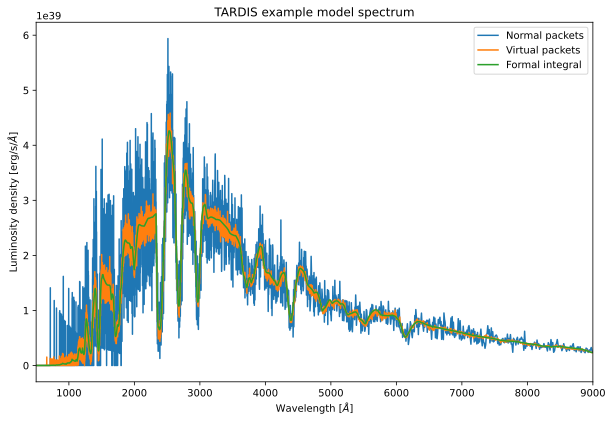

You can interact with this notebook online: Launch notebook
Quickstart for TARDIS¶
Every simulation run requires atomic data and a configuration file.
Atomic Data¶
We recommend using the kurucz_cd23_chianti_H_He_latest.h5 dataset.
[1]:
from tardis.io.atom_data import download_atom_data
[2]:
download_atom_data('kurucz_cd23_chianti_H_He_latest')
Atomic Data kurucz_cd23_chianti_H_He_latest already exists in /home/runner/Downloads/tardis-data/kurucz_cd23_chianti_H_He_latest.h5. Will not download - override with force_download=True.
You can also obtain a copy of the atomic data from the tardis-regression-data repository.
Example Configuration File¶
The configuration file tardis_example.yml is used throughout this Quickstart.
[3]:
!wget -q -nc https://raw.githubusercontent.com/tardis-sn/tardis/master/docs/tardis_example.yml
[4]:
!cat tardis_example.yml
# Example YAML configuration for TARDIS
tardis_config_version: v1.0
supernova:
luminosity_requested: 9.44 log_lsun
time_explosion: 13 day
atom_data: kurucz_cd23_chianti_H_He_latest.h5
model:
structure:
type: specific
velocity:
start: 1.1e4 km/s
stop: 20000 km/s
num: 20
density:
type: branch85_w7
abundances:
type: uniform
O: 0.19
Mg: 0.03
Si: 0.52
S: 0.19
Ar: 0.04
Ca: 0.03
plasma:
disable_electron_scattering: no
ionization: lte
excitation: lte
radiative_rates_type: dilute-blackbody
line_interaction_type: macroatom
montecarlo:
seed: 23111963
no_of_packets: 4.0e+4
iterations: 20
nthreads: 1
last_no_of_packets: 1.e+5
no_of_virtual_packets: 10
convergence_strategy:
type: damped
damping_constant: 1.0
threshold: 0.05
fraction: 0.8
hold_iterations: 3
t_inner:
damping_constant: 0.5
spectrum:
start: 500 angstrom
stop: 20000 angstrom
num: 10000
Running the Simulation¶
To run the simulation, import the run_tardis function and create the sim object.
[5]:
from tardis import run_tardis
Note:
Get more information about the progress bars, logging configuration, and convergence plots.
[6]:
sim = run_tardis("tardis_example.yml",
virtual_packet_logging=True,
show_convergence_plots=True,
export_convergence_plots=True,
log_level="INFO")
Auto-detected Jupyter notebook environment
Initializing panel with ipywidgets comms for Jupyter notebook
Auto-detected Jupyter notebook environment
Initializing panel with ipywidgets comms for Jupyter notebook
Embedding the final state for Jupyter environments
Plotting the Spectrum¶
Finally, plot the generated spectrum with matplotlib.
[7]:
import matplotlib.pyplot as plt
[8]:
spectrum = sim.spectrum_solver.spectrum_real_packets
spectrum_virtual = sim.spectrum_solver.spectrum_virtual_packets
spectrum_integrated = sim.spectrum_solver.spectrum_integrated
[py.warnings ][WARNING] /home/runner/work/tardis/tardis/tardis/spectrum/formal_integral.py:398: UserWarning:
The number of interpolate_shells was not specified. The value was set to 80.
(warnings.py:110)
[9]:
%matplotlib inline
plt.figure(figsize=(10, 6.5))
spectrum.plot(label="Normal packets")
spectrum_virtual.plot(label="Virtual packets")
spectrum_integrated.plot(label='Formal integral')
plt.xlim(500, 9000)
plt.title("TARDIS example model spectrum")
plt.xlabel("Wavelength [$\AA$]")
plt.ylabel("Luminosity density [erg/s/$\AA$]")
plt.legend()
plt.show()
[py.warnings ][WARNING] <>:10: SyntaxWarning:
invalid escape sequence '\A'
(warnings.py:110)
[py.warnings ][WARNING] <>:11: SyntaxWarning:
invalid escape sequence '\A'
(warnings.py:110)
[py.warnings ][WARNING] <>:10: SyntaxWarning:
invalid escape sequence '\A'
(warnings.py:110)
[py.warnings ][WARNING] <>:11: SyntaxWarning:
invalid escape sequence '\A'
(warnings.py:110)
[py.warnings ][WARNING] /tmp/ipykernel_5951/3606673508.py:10: SyntaxWarning:
invalid escape sequence '\A'
(warnings.py:110)
[py.warnings ][WARNING] /tmp/ipykernel_5951/3606673508.py:11: SyntaxWarning:
invalid escape sequence '\A'
(warnings.py:110)

[ ]: